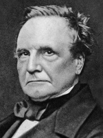

Введение
Информация
- Аналитическая машина:
- - механическая программируемая вычислительная машина, прообраз современного компьютера.
- Разностная машина:
- - механический аппарат, изобретённый Бэббиджем для автоматизации вычислений путём аппроксимации функций многочленами и вычисления конечных разностей.
- Метод конечных разностей:
- - математический метод для вычисления последовательностей значений с использованием сложения.